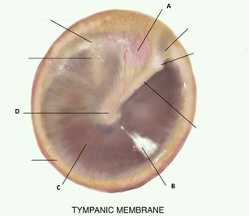
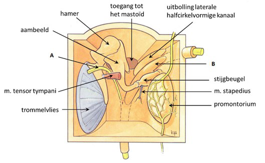
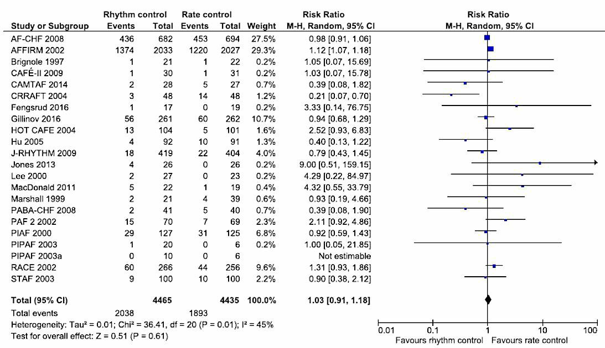
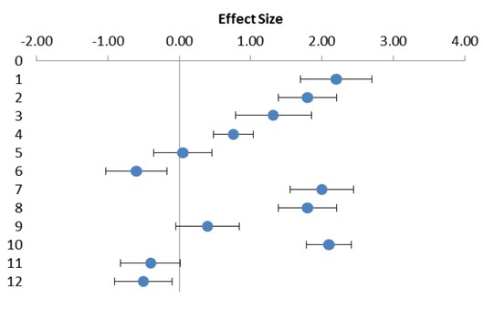
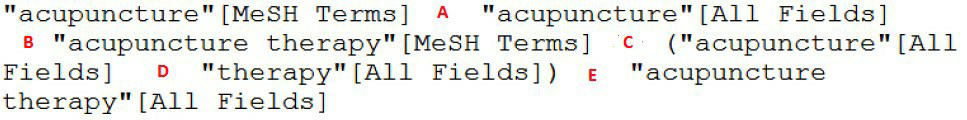
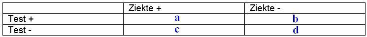
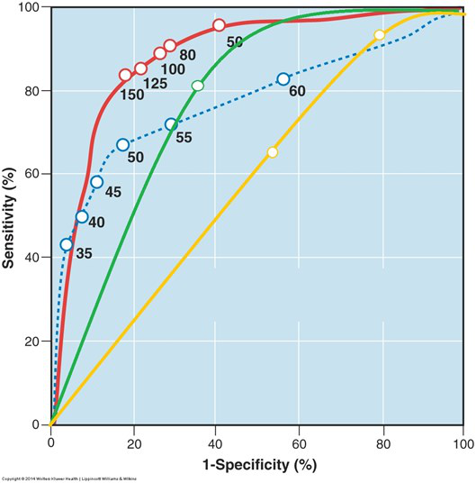

Al je antwoorden worden gewist en je begint opnieuw. Weet je het zeker?
Jouw resultaten
Arts en Patiënt 4 · 2e Toetsmoment 2020‑2021
—
/ 39
0
Goed
0
Fout
0
Niet beantwoord
Vraag 1
Welke kenmerken passen het meest bij een mediane halscyste? Vink er twee aan.
Meerdere antwoorden mogelijk.
Vraag 2
Elisabeth is 14 jaar. Ze komt bij de huisarts omdat ze al vijf dagen keelpijn heeft en koorts. De temperatuur was de eerste twee dagen rond de 38 graden. De laatste drie dagen is de temperatuur elke dag hoger dan 39 graden. Bij onderzoek voelt de huisarts meerdere pijnlijke halslymfeklieren van ongeveer 1-2 cm groot. De farynxwand is rood. De gehemeltebogen zijn assymetrisch. De huisarts besluit om Elisabeth feneticilline te geven (antibioticum).
Wat is de belangrijkste reden om te starten met een antibioticum?
Vraag 3
Als een patiënt keelpijn en koorts heeft dan is het op basis van bevindingen bij anamnese en lichamelijk onderzoek soms mogelijk om een onderscheid te maken in de meest waarschijnlijke verwekker. Kies voor elke verwekker het juiste gegeven.
Sleep een optie naar de bijbehorende rij, of tik eerst op een kaart en dan op een rij.
virale infectie
Sleep hier naartoe
streptokokken infectie
Sleep hier naartoe
mononucleosis infectiosa
Sleep hier naartoe
Vraag 4
Maria komt met haar moeder op het spreekuur van de huisarts in het dorp in de buurt van de camping waar ze haar zomervakantie doorbrengt. Zij is 12 jaar. Sinds drie dagen komt er wat vuiligheid uit het linkeroor. Het doet gelukkig geen pijn. Het jeukt wel. Ze heeft geen koorts gehad. Bij onderzoek ziet de huisarts het trommelvlies niet door de aanwezigheid van pussige afscheiding in de gehoorgang.
Wat is de meest waarschijnlijke diagnose?
Vraag 5
Yassin is twee jaar. Hij heeft sinds een week een snotneus en een hoest. Hij heeft veel gehuild en weinig gegeten en gedronken. De temperatuur schommelde rond de 38 graden. De ouders komen nu op het spreekuur van de huisarts omdat afscheiding uit het linker oor loopt. Opvallend is dat Yassin vandaag niet meer gehuild heeft.
Wat is de meest waarschijnlijke diagnose?
Vraag 6
Lucas is één jaar. Hij is sinds een week aan het snotteren. Omdat hij de laatste twee dagen koorts heeft zijn de ouders van Lucas met hem naar het inloopspreekuur van de huisarts gegaan. Lucas eet minder, maar drinkt nog redelijk. De hoogste temperatuur was 39.9 graden. Hij heeft nu nog steeds oorpijn. Bij onderzoek ziet de huisarts in het linkeroor een rood bomberend trommelvlies. Het rechter trommelvlies is normaal. De keel en tonsillen hebben een normaal aspect. In de hals zijn er meerdere vergrote lymfeklieren palpabel.
Wat is op dit moment het beste medicamenteuze advies?
Vraag 7
Op welke locatie manifesteert een cholesteatoom zich meestal?

Vraag 8
Wat zijn de typische klachten van een otitis media met effusie? Noem er drie.
Modelantwoord
1. Drukgevoel op het oor / ploppen van het oor
2. Doofheid / slechthorendheid
3. Verkoudheid / snotteren
Drie juiste antwoorden 2 punt. Twee juiste antwoorden 1 punt.
Twee antwoorden goed is 1 punt. Alle drie goed is 2 punten.
Vraag 10
Lucas is 8 jaar oud. Hij komt op het ochtendspreekuur van de huisarts in opleiding. Hij heeft sinds drie dagen koorts, pijn aan zijn rechter kaak, keelpijn en oorpijn. Hij voelt zich ziek. Hij heeft weinig gegeten maar wel goed gedronken. Bij onderzoek ziet de huisarts in opleiding een rood trommelvlies aan het rechteroor. De tonsillen zijn symmetrisch vergroot. Rechts in de hals voelt zij een vergrote lymfeklier van 2 cm. Het rechter ooglid is rood en de conjunctiva is gezwollen.
Vanwege welke twee bevindingen moet Lucas ingestuurd worden naar de KNO-arts? Vink twee antwoorden aan.
Meerdere antwoorden mogelijk.
Vraag 11
Geef van de onderstaande oorzaken van neusobstructie aan of ze vaak, soms, of zelden voorkomen in de huisartsenpraktijk.
Virale rhinosinusitis
Bacteriële rhinosinusitis
Allergische rhinitis
Rhinitis medicamentosa
Vraag 12
Een 23-jarige studente komt bij de KNO-arts omdat ze vaak een hese stem heeft. Het probleem bestaat sinds een jaar en is wisselend aanwezig. Bij laryngoscopie ziet de KNO-arts geen afwijkingen.
Wat is op basis van deze gegevens de meest waarschijnlijke diagnose?
Modelantwoord
Waarschijnlijk heeft zij een verkeerd gebruik van haar stem gezien er geen organische afwijkingen zijn geconstateerd. Verkeerd stemgebruik is een veelvoorkomend probleem.
Verkeerd stemgebruik = 1 punt.
Vraag 13
Bovenstaande afbeelding is een schematische weergave van het middenoor.
Wat is structuur A in deze afbeelding?

Vraag 14
Een 21-jarige vrouw is aangereden door een auto. Ze wordt matig aanspreekbaar op de eerste hulp binnengebracht. Enkele bevindingen die de arts constateert zijn: bloeding uit de gehoorgang, trommelvliesperforatie en facialisparese.
Op welk potentieel ernstig letsel moet de arts nu bedacht zijn gezien deze bevindingen?
Modelantwoord
De arts moet vanwege deze drie symptomen bedacht zijn op een schedelbasisfractuur.
1 punt als de student een schedelbasisfractuur noemt. Anders 0 punten.
Vraag 15
Wat is een kenmerk van een atypische koortsstuip?
Vraag 16
Yasmine is een meisje van 3 jaar oud. Haar moeder belt met de assistente van de huisartsenpraktijk. Ze vertelt dat Yasmine een week geleden drie dagen koorts had, maar dat ze daarna opknapte. Sinds een dag heeft ze opnieuw koorts. Vanochtend was de temperatuur 40.2 graden Celsius. Ze heeft afgelopen twee dagen weinig gegeten. Ze moest een keer braken nadat ze wat vla had gegeten. Drinken gaat redelijk normaal. Ze snottert flink en ze hoest. Ze speelt af en toe, maar is snel moe. Moeder vindt haar niet suf. Ze heeft normale ontlasting. Het plassen is normaal. De huidskleur is normaal. De ademhaling is rustig. De moeder vraagt of ze naar het spreekuur moet komen.
Moet de assistente Yasmine een afspraak op het spreekuur geven? Beargumenteer je keuze.
Modelantwoord
Ja, de assistente moet Yasmine naar het spreekuur laten komen. Terugkerende koorts na een koortsvrije periode is een reden om het kind dezelfde dag nog te beoordelen.
1 punt als de student het juiste antwoord geeft én 1 punt als de student uitlegt dat de terugkerende koorts de reden is om Yasmine te laten beoordelen.
Vraag 17
Mevrouw Simon is 55 jaar. Sinds 3 jaar heeft ze geen menstruatie meer. Ze komt op het spreekuur van de huisarts omdat ze drie keer wat vaginaal bloedverlies heeft gehad. Iedere keer trad het op nadat ze met haar man gevreeën had. Ze heeft geen spontaan vaginaal bloedverlies gehad. Bij vaginaal toucher voelt de huisarts geen afwijkingen. In speculo ziet de huisarts geen afwijkingen.
Welk aanvullend onderzoek moet de huisarts nu in ieder geval doen? Noem twee onderzoeken.
Modelantwoord
Cervixcytologie (uitstrijkje, pap-smear) én een (vaginale, gynaecologische) echo (van de baarmoeder).
2 punten als de student cervixcytologie (uitstrijkje, pap-smear) noemt én (vaginale, gynaecologische) echo (van de baarmoeder) noemt. Abdominale echo is fout. Chlamydia en uitstrijkje of echo is 1 punt.
Vraag 18
Een uitstrijkje in het kader van het bevolkingsonderzoek blijkt hrHPV-positief. De cytologie is PAP 1.
Wat is het vervolgbeleid?
Modelantwoord
Over 6 maanden moet het uitstrijkje herhaald worden c.q. de cytologie moet herhaald worden.
1 punt als de student antwoordt dat over 6 maanden het uitstrijkje herhaald moet worden c.q. dat de cytologie herhaald moet worden.
Vraag 19
Bij welke genmutatie is er een hoge kans op het krijgen van ovariumcarcinoom (cumulatief life-time risico > 25%)?
Modelantwoord
Het BRCA1-gen. Dit geeft een cumulatief life-time risico van 25-45% op ovariumcarcinoom.
(p.m. het BRCA2-gen is foutief: risico rond 10%.)
Het BRCA1-gen = 1 punt.
Vraag 20
Mevrouw Wilders is 60 jaar en komt bij de huisarts omdat ze sinds een paar dagen wat vaginaal bloedverlies heeft. Ze heeft al 12 jaar niet gemenstrueerd. Daarna heeft ze altijd de koperspiraal gebruikt. Haar menstruaties zijn altijd onregelmatig geweest vanwege het polycysteus ovariumsyndroom. Ze is jaarlijks onder controle van de huisarts vanwege hypertensie.
Welke factor in haar verhaal verhoogt het risico op endometriumcarcinoom het meest?
Vraag 21
Wanneer kan tegen een zorgverlener een klacht worden ingediend bij het tuchtcollege? Als deze zorgverlener:
Vraag 22
Welke arts kan tuchtrechtelijk aansprakelijk zijn volgens de tweede tuchtnorm? Een arts die:
Vraag 23
Onderzoekers doen een systematic review naar het effect van antibiotische behandeling van acute sinusitis op het aantal dagen koorts en ziek zijn. Nadat ze alle relevante artikelen hebben geselecteerd maken ze een funnelplot om te beoordelen of er sprake is van publicatiebias.
Hoe kunnen ze aan de funnelplot zien of er sprake is van publicatiebias? Leg uit.
Modelantwoord
Als de funnelplot asymmetrisch is dan is er mogelijk sprake van publicatiebias. Uitleg: op de x-as van de funnelplot staat de grootte van het effect en op de y-as de precisie van de effectschatting. Als de studies niet gelijk verdeeld zijn rondom de gemiddelde effect size (er is asymmetrie), dan zijn er mogelijk studies niet gepubliceerd (meestal de studies die geen effect laten zien van een behandeling).
Als student noemt dat de funnelplot asymmetrisch is: 1 punt. Als student dit juist uitlegt: 1 punt.
Vraag 24
Onderzoekers hebben een systematic review gedaan naar atriumfibrilleren. Ze vergeleken twee behandelingen: ritmecontrole vs frequentiecontrole. Ze bekeken welke behandeling het minste kans geeft op ernstige complicaties. Ze vonden onderstaande studies.
Welke twee studies hebben de meest precieze effectschatting?

Modelantwoord
De studies met de meest precieze effectschatting zijn de bovenste twee studies: AF-CHF 2008 en AFFIRM 2002.
Beide studies juist genoemd is 1 punt. Eén studie juist genoemd is 0 punten.
Vraag 25
Onderzoekers hebben een systematic review gedaan naar de behandeling van lage rugpijn. Ze vinden onderstaande twaalf studies.
Kunnen de onderzoekers het beste een fixed-effects model of een random-effects model toepassen? Leg uit.

Modelantwoord
De onderzoekers moeten een random-effects model toepassen. Uitleg: er is heterogeniteit tussen de studies.
Random-effects model: ½ punt. Uitleg (heterogeniteit): ½ punt. Totaal 1 punt.
Vraag 26
Onderzoekers gaan een systematic review doen naar het effect van acupunctuur op lage rugpijn. Ze willen alle onderzoeken includeren die gaan over acupunctuurbehandeling.
Welke term moeten ze gebruiken bij 'A'?

Vraag 27
Vul de vier-velden tabel in voor een totaal van 100 mensen. Prevalentie 30% Sensitiviteit 80% Specificiteit 90%
Welke getallen horen in de vier velden te staan? (a = Test+/Ziekte+, b = Test+/Ziekte−, c = Test−/Ziekte+, d = Test−/Ziekte−)

Modelantwoord
a = 24 (Test+ / Ziekte+)
b = 7 (Test+ / Ziekte−)
c = 6 (Test− / Ziekte+)
d = 63 (Test− / Ziekte−)
Alle vier de velden goed is 2 punten, anders 0 punten.
Vraag 28
Een nieuwe test om vroegtijdig ovariumcarcinoom op te sporen wordt in een onderzoek geëvalueerd. Er worden twee groepen onderzocht. Bij de mensen in groep A wordt eenmalig aan het begin van het onderzoek de test afgenomen. Er blijken op dat moment 125 mensen ovariumcarcinoom te hebben. Gedurende het jaar follow-up worden er nog eens 75 mensen met ovariumcarcinoom ontdekt. In groep B (de controlegroep) wordt de test niet afgenomen. In deze groep blijken er in het jaar follow-up 150 mensen ovariumcarcinoom te hebben.
Hoe groot is de sensitiviteit van deze test volgens de detectiemethode?
Vraag 29
Men onderzoekt de diagnostische waarde van de d-dimeer bepaling voor het vaststellen van een diep veneuze trombose (DVT). De gouden standaard voor het vaststellen van een DVT is een echo-doppler die door een radioloog wordt gemaakt. Als de radioloog in dit onderzoek niet blind is voor de uitkomst van het d-dimeer kan er vertekening optreden van de onderzoeksresultaten.
Kies de juiste alternatieven.
Welke vertekening is dan waarschijnlijk? Men de sensitiviteit en men de specificiteit van de d-dimeerbepaling.
Vraag 30
Met behulp van een ROC-curve kan men bepalen hoe goed een diagnostische test is.
Welke test is het beste? De test met:

Vraag 31
Stel dat er drie tests zijn om een ziekte X op te sporen: test A, B en C. De kenmerken van de tests zijn: Test A: sensitiviteit 70%, specificiteit 80%. Test B: sensitiviteit 75%, specificiteit 60%. Test C: sensitiviteit 60%, specificiteit 60%. Bij het opsporen van de ziekte is het belangrijk om zo weinig mogelijk mensen met de ziekte te missen (zo weinig mogelijk fout-negatieve uitslagen). Welke tests kan men het beste parallel inzetten?
Test A
Test B
Test C
Vraag 32
Bij onderzoek naar het effect van screening op kanker kan lead time bias gevonden worden.
Wat is lead time bias? Leg uit.
Modelantwoord
Definitie lead time bias: screening lijkt effectief doordat patiënten in een vroeger ziektestadium de diagnose krijgen. Toelichting: screening levert pas gezondheidswinst op als er daadwerkelijk meer levensjaren bij komen. Als screening patiënten in een vroeger stadium opspoort, maar dit niet leidt tot een ander ziektebeloop, dan lijkt het alsof patiënten langer leven terwijl dat feitelijk niet zo is — er zijn geen gewonnen levensjaren, alleen meer ziektejaren.
1 punt indien juiste definitie.
Vraag 33
Stel: de pretestkans op ziekte X is 0,25. De positieve likelihoodratio van test Y is 10.
Wat is de posttest odds op ziekte bij een positief resultaat van de test?
Modelantwoord
De posttestodds is 3,3.
Toelichting:
1. De pretestodds is 1/3 = 0,33.
2. De posttestodds is 10 × 0,33 = 3,3.
Posttestodds = 3,3: 1 punt (pretestodds ½ punt, posttestodds ½ punt).
Vraag 34
Van welke preventie is hier sprake?
Sleep een optie naar de bijbehorende rij, of tik eerst op een kaart en dan op een rij.
Een patiënt rookt en krijgt het advies om te stoppen met roken
Sleep hier naartoe
Een patiënt krijgt statines vanwege perifeer arterieel vaatlijden
Sleep hier naartoe
Vraag 35
Men onderzoekt het beloop van idiopathische facialisparese en vergelijkt een groep patiënten die prednison gebruiken met een groep patiënten die geen prednison gebruiken. Het onderzoek is dubbelblind en gerandomiseerd. Het blijkt dat patiënten die prednison gebruiken gemiddeld 6 weken eerder compleet hersteld zijn dan patiënten zonder medicatie (RR 2,32; 95%-BI 1,88-3,04).
Is hier sprake van een causale relatie? Leg uit.
Modelantwoord
Op basis van deze gegevens lijkt er inderdaad een causale relatie te zijn tussen prednisongebruik en een sneller herstel. Belangrijk argument voor causaliteit is dat het hier gaat om een RCT.
Causale relatie: ½ punt. Argument (RCT): ½ punt.
Vraag 36
Welk onderzoeksdesign geeft de sterkste aanwijzing voor een causale relatie? Zet in de juiste volgorde, begin met het sterkste design.
Sleep een optie naar de bijbehorende rij, of tik eerst op een kaart en dan op een rij.
Multiple time-series
Sleep hier naartoe
Case-control
Sleep hier naartoe
Case-series
Sleep hier naartoe
Vraag 37
Het criterium voor wetenschappelijkheid wordt als volgt geformuleerd: “een theorie is wetenschappelijk als hij geverifieerd kan worden aan de hand van feiten die door theorievrije waarneming zijn verkregen.”
Leg uit welke kritiek Karl Popper (1902-1994) had op: 1. de verificatie-eis en wat zijn alternatief was; 2. de eis van theorievrije waarneming.
Modelantwoord
1. Ook pseudowetenschappelijke theorieën kunnen worden geverifieerd. Popper stelt er het falsificatieprincipe tegenover.
2. Volgens Popper is 'theorievrije' waarneming onmogelijk; iedere waarneming is al bij voorbaat 'theorie-geladen' / gekleurd door theorie.
Per juist onderdeel 1 punt. Totaal 2 punten.
Vraag 38
Je kunt Karl Popper een 'fallibilist' noemen.
1. Wat houdt de stelling van het fallibilisme in met betrekking tot wetenschappelijke theorieën? 2. Wanneer heeft volgens Karl Popper een theorie een 'hoge corroboratiegraad'?
Modelantwoord
1. Fallibilisme staat voor de stelling dat elke theorie principieel feilbaar is / geen enkele theorie is 'absoluut waar', maar altijd 'voorlopig waar'.
2. Als een theorie veel 'potentiële falsificatoren' bevat én als deze theorie veel pogingen tot falsificatie (empirische toetsing) heeft overleefd.
Per juist onderdeel 1 punt. Totaal 2 punten.
Vraag 39
In het werk 'The Structure of Scientific Revolutions' van Thomas Kuhn (1922-1996) staat het begrip 'paradigma' centraal.
1. Noem minstens drie elementen die deel van een paradigma uitmaken. 2. Wat is een 'anomalie' en waar kan het toe leiden?
Modelantwoord
1. (1) vakwetenschappelijke theorieën, (2) filosofische uitgangspunten, (3) exemplarische voorbeelden, (4) waarden van de wetenschap.
2. Een 'lastig feit': een feit dat niet met de theorieën van het heersende paradigma is te verklaren. Het kan het begin zijn van een crisis (en uiteindelijk de vorming van een nieuw paradigma).